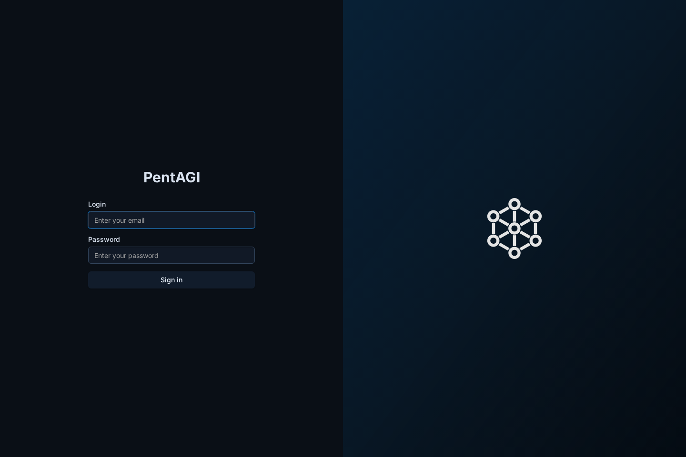
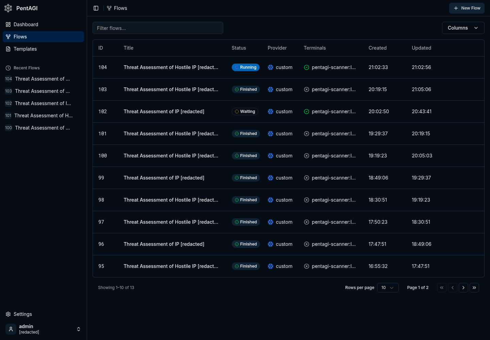
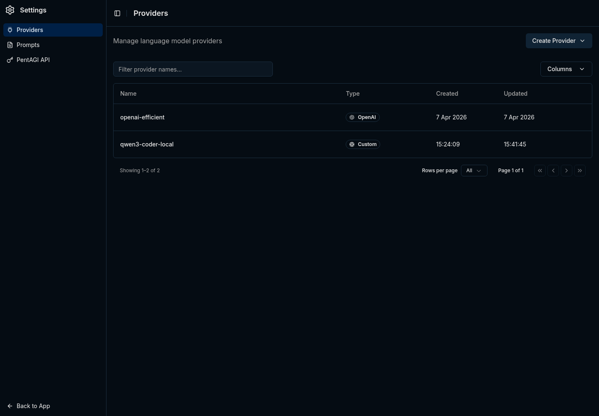

What should happen after a random scanner touches your honeypot? Most of the time you get an IP address, maybe a timestamp, and a small reminder that the internet is always knocking on the cheapest door it can find.
I wanted that signal to turn into a small, repeatable investigation without building another dashboard that I would eventually ignore. The result is a simple pipeline: an FTP honeypot records public source IPs, a watcher daemon turns new entries into PentAGI flows, and PentAGI runs bounded defensive reconnaissance through a local model provider.
The full publishable code is available in kvncrw/pentagi-honeypot-bridge. The repo contains the daemon, the PentAGI watcher, systemd units, runit scripts, and a few focused tests so you can read the whole thing without reverse-engineering my homelab. If you want to understand PentAGI itself first, start with vxcontrol/pentagi.

What We Are Building
There are two parts to this system, and the separation is important because each part has a very different job.
On the edge host, honeypotd.py listens on FTP and records public source IPs. The same process exposes /blocked.json on port 9001, including first-seen time, last-seen time, hit count, reasons, and attempted usernames. It does not store passwords.
Next to it, pentagi_watcher.py polls that JSON endpoint. For each new IP inside the configured age window, the watcher checks how many PentAGI flows are already active and only creates more work when capacity is available.
PentAGI runs in Kubernetes. In my homelab it is deployed with ArgoCD, Postgres/pgvector, Graphiti, Neo4j, a scraper service, and a DinD sidecar that launches scanner containers with tools like nmap, curl, jq, traceroute, whois, and dig.
pipeline
internet scanner
-> ftp honeypot on :21
-> /blocked.json on 127.0.0.1:9001
-> pentagi_watcher.py
-> PentAGI createFlow(modelProvider: "custom")
-> scanner container
-> short defensive recon summaryThe honeypot does not need to know anything about PentAGI, Kubernetes, GraphQL, or whichever model is currently doing the analysis. It emits a small JSON document, and the watcher becomes the only integration point between the exposed service and the analysis platform.

Install the Honeypot Daemon
Start on the host that will receive the bait traffic. This can be a tiny edge host, a small VM, or any system where you are comfortable exposing a fake FTP service to the network you control.
install
git clone https://github.com/kvncrw/pentagi-honeypot-bridge.git
cd pentagi-honeypot-bridge
sudo useradd --system --home /var/lib/pentagi-honeypot --shell /usr/sbin/nologin honeypot
sudo mkdir -p /opt/pentagi-honeypot-bridge /var/lib/pentagi-honeypot /etc/pentagi-honeypot
sudo cp honeypotd.py pentagi_watcher.py /opt/pentagi-honeypot-bridge/
sudo chown -R honeypot:honeypot /var/lib/pentagi-honeypotFor the first smoke test, bind FTP to 2121 instead of privileged port 21. The daemon ignores loopback, RFC1918, link-local, and unique-local IPv6 ranges by default; clear the ignore list for this local test so 127.0.0.1 shows up in the feed.
local test
HONEYPOT_FTP_PORT=2121 \
HONEYPOT_STATE_FILE=/tmp/honeypot-blocked.json \
HONEYPOT_IGNORE_CIDRS= \
python3 honeypotd.pyNow touch the service from another shell and check the JSON output:
touch the trap
printf 'USER admin\r\nPASS admin\r\nQUIT\r\n' | nc 127.0.0.1 2121
curl http://127.0.0.1:9001/blocked.jsonThe feed should look like this:
blocked.json
{
"generated_at": "2026-04-28T12:00:00Z",
"count": 1,
"blocked": [
{
"ip": "203.0.113.10",
"first_seen": "2026-04-28T11:58:12Z",
"last_seen": "2026-04-28T11:58:20Z",
"hits": 3,
"reasons": ["ftp-connect", "ftp-user", "ftp-pass"],
"usernames": ["admin"]
}
]
}The important code path is also small enough to reason about quickly. Every connection marks the source IP, selected FTP commands update the reason list, and password values are deliberately ignored.
honeypotd.py
def handle(self) -> None:
peer_ip = self.client_address[0]
self.store.mark(peer_ip, "ftp-connect")
self.write_line(self.banner)
while True:
raw = self.rfile.readline(1024)
if not raw:
return
command, _, value = raw.decode(errors="replace").strip().partition(" ")
command = command.upper()
if command == "USER":
self.store.mark(peer_ip, "ftp-user", value or None)
self.write_line("331 Password required")
elif command == "PASS":
self.store.mark(peer_ip, "ftp-pass")
self.write_line("530 Login incorrect")On a systemd host, install the included service files and start the daemon:
systemd
sudo cp systemd/*.service /etc/systemd/system/
sudo systemctl daemon-reload
sudo systemctl enable --now honeypotd.serviceIf you are using Void Linux or another runit host, the repo includes runit/honeypotd.run and runit/pentagi-watcher.run. My original edge deployment used runit for the host services and Kubernetes for PentAGI itself, which kept the exposed daemon independent from the cluster.
Configure the PentAGI Watcher
Create a dedicated PentAGI API token for the watcher. The exact UI can change over time, however the operational rule is stable: give the watcher only the access it needs to create and inspect flows, and treat token revocation as your first emergency brake. I am intentionally not repeating the full PentAGI install guide here; the upstream site and GitHub repo are better places for that.
Put the watcher config in /etc/pentagi-honeypot/watcher.env:
watcher.env
BLOCKED_URL=http://127.0.0.1:9001/blocked.json
PENTAGI_URL=https://pentagi.example.com
PENTAGI_TOKEN=replace-me
PENTAGI_MODEL_PROVIDER=custom
WATCHER_STATE_FILE=/var/lib/pentagi-honeypot/watcher-state.json
MAX_ACTIVE_FLOWS=2
MAX_AGE_DAYS=7
STALE_FLOW_MINUTES=30
POLL_INTERVAL=120PENTAGI_MODEL_PROVIDER=custom is the key for the local-model path. In PentAGI, that custom provider points at an OpenAI-compatible vLLM endpoint inside the cluster, so the watcher does not need to know which model is serving the request.
Start the watcher:
start watcher
sudo systemctl enable --now pentagi-watcher.service
journalctl -u honeypotd -u pentagi-watcher -fThe watcher is deliberately conservative. It loads durable state, skips already-seen IPs, ignores stale entries, asks PentAGI how many flows are active, and creates only as many new flows as the cap allows.
pentagi_watcher.py
active = client.active_flow_count(timedelta(minutes=args.stale_flow_minutes))
slots = max(args.max_active_flows - active, 0)
for _, ip in candidates[:slots]:
prompt = build_prompt(ip, bool(args.abuseipdb_enabled))
flow = client.create_flow(args.model_provider, prompt)
state["seen"][ip] = utc_now().isoformat()
LOG.info("created Pentagi flow %s for %s", flow.get("id"), ip)This active-flow cap came from a real failure. The first version counted the wrong statuses, created dozens of simultaneous flows, and proved that agent automation without backpressure can spend money faster than it creates useful information.
Do not wire Claude Max or ChatGPT Pro into unattended PentAGI flows. You can burn through usage quickly, and the ChatGPT Pro and Claude consumer terms restrict this kind of automated, third-party workload. Use an API/commercial provider or a local model you control.
The Flow Prompt
The flow prompt should read like an operating procedure for defensive reconnaissance. You want ownership lookup, conservative service detection, and a short recommendation that helps you decide whether the source deserves a stronger block.
flow prompt shape
Perform defensive reconnaissance on IP 203.0.113.10, which just touched our FTP honeypot.
Rules:
- Use direct scanner-container tooling.
- Keep scans conservative. No exploitation, brute force, or credential attempts.
Steps:
1. Run a bounded TCP connect scan against a small port set.
2. If ports are open, run service detection against only those ports.
3. Run WHOIS directly.
4. Run reverse DNS directly.
5. Run a short traceroute directly.
6. Check reputation only if a key is already configured.
7. Return a short threat summary and blocklist recommendation.An earlier version routed scanner traffic through Tor with proxychains4. That path is gone because it made the system worse: avoidable DNS failures, SOCKS failures, slower runs, and reports that were harder to trust. The current prompt keeps the work direct, conservative, and bounded inside the scanner container.
Point PentAGI at the 5090
I started with the obvious provider path: use ChatGPT Pro through a local OpenAI-compatible bridge and let PentAGI call stronger models for every role. It worked, however a honeypot produces a lot of low-value events, and paying frontier-token prices to classify every random FTP hit is a poor default.
So I asked Claude to help make the model decision like an operations decision. The prompt was not "find the best model"; it was closer to this:
benchmark instruction
Inventory current coding/agent models that can realistically run on one RTX 5090
with 32 GB of VRAM. Reject anything that cannot fit with useful context.
Build a PentAGI-specific benchmark using the same GraphQL flow creation path,
the same scanner tools, and the same defensive recon tasks we expect from the
honeypot pipeline.
Compare ChatGPT Pro through the bridge against the best local vLLM candidate.
Grade by task completion, valid tool calling, runtime, and operational cost.That framing is important because generic benchmark numbers do not tell you whether PentAGI can call tools reliably, survive your context settings, or produce a useful security summary after a noisy scanner touches your infra.
The fit check eliminated the giant MoE models immediately: GLM-5-class, Kimi-K2-class, DeepSeek V4-class, and the 480B Qwen coder variants all need far more VRAM than a single desktop card. The survivors were smaller Qwen and Devstral-class models, with Qwen3-Coder-30B-A3B looking like the best match for tool-heavy agent loops.
The final vLLM deployment serves QuantTrio/Qwen3-Coder-30B-A3B-Instruct-AWQ with the matching qwen3_coder tool parser:
vllm values
model:
name: QuantTrio/Qwen3-Coder-30B-A3B-Instruct-AWQ
maxModelLen: 65536
maxNumSeqs: 4
gpuMemoryUtilization: "0.92"
quantization: awq_marlin
enableAutoToolChoice: true
toolCallParser: qwen3_coderPentAGI's custom provider points at that in-cluster OpenAI-compatible endpoint:
pentagi values
LLM_SERVER_PROVIDER: ""
LLM_SERVER_URL: "http://vllm.vllm.svc.cluster.local:8000/v1"
LLM_SERVER_KEY: "pentagi-internal-no-billing"
LLM_SERVER_CONFIG_PATH: "/etc/pentagi/llm-config.yml"The empty provider string is intentional. In this setup, a provider prefix like custom/gpt-5.4-mini confused the OpenAI-compatible bridge, while leaving the provider blank let PentAGI send raw model names to the endpoint.

The Benchmark That Changed My Mind
The first local-model run looked bad because Qwen emitted zero tool calls. That result looked like a model failure until the request logs showed it was really a configuration problem.
Two settings were doing the damage. PentAGI's inherited role config had output budgets as high as the model context window, which left vLLM with no input budget and caused request validation failures. Sampling temperatures around 0.4 to 0.7 were also too high for reliable tool-call JSON from this model.
Capping role outputs and dropping temperature to 0.1 fixed the tool-calling behavior. After that, the benchmark results became useful:
| Provider | Avg Duration | Avg Tool Calls | Grade |
|---|---|---|---|
| ChatGPT Pro bridge | 208.0s | 1.0 | 2.67 / 3 |
| Qwen3-Coder-30B on vLLM | 310.5s | 25.3 | 3.00 / 3 |
ChatGPT Pro behaved like a terse expert: one scan, one summary, done. Qwen3-Coder behaved like a careful operator: scan, detect services, verify, cross-check, summarize. It was slower and much chattier, however that trade-off is acceptable when the watcher only allows a few active flows and the marginal token cost is GPU power instead of API billing.
The current posture is simple: run routine honeypot recon on custom backed by vLLM, keep any paid frontier model path human-initiated and terms-compliant, and never let the watcher fan out wider than the scanner containers and GPU can tolerate.
Operational Brakes
Agent-based automation needs visible brakes, especially when it can create containers, run scans, and consume paid or local inference capacity.
- Stop new work: stop
pentagi-watcher.service. - Stop auth: revoke the dedicated PentAGI watcher token.
- Stop current work: finish or cancel active PentAGI flows.
- Control spend: keep
MAX_ACTIVE_FLOWSlow and treat increases as capacity changes. - Control replay: keep the watcher state file durable so restarts do not resubmit the whole blocked list.
The old failure mode came from asking PentAGI to do exactly what the automation requested, too many times at once. That is why the watcher must own dedupe, active-flow limits, and stale-flow handling before any investigation reaches the agent layer.
Why This Pattern Works
Most honeypots stop at alerting: "this IP touched the trap." That is useful, however it still leaves triage on you. This pipeline turns the hit into a small report about ownership, exposed services, reputation, and whether the source looks like commodity scanning or something worth blocking more aggressively.
The practical design rule is to keep the interfaces boring. The honeypot emits JSON, the watcher owns dedupe and flow pressure, PentAGI owns the investigation, and vLLM handles routine inference for events that do not justify paid-token analysis.
If you already operate PentAGI, this gives you a useful way to connect low-cost edge signal to agent-driven analysis without letting every scanner become an unbounded workload. If you are still evaluating PentAGI, the important lesson is the same one learned from operating and observing production systems at scale: the integration should create operational context, and the automation must respect capacity.
Related Posts
This setup fits the same pattern I have been using elsewhere in the homelab: small security signals become useful when they are enriched with context, but the automation still needs limits. Building an LLM-Powered SIEM for Your Homelab covers the monitoring side of that idea with Loki, NextDNS, and persistence-based alerting.
The agent safety story matters too. Giving Your AI Agent a Real Key to the Vault explains how I expose secrets to agents through Bitwarden instead of ambient shell access, and Stop Letting npm Install Talk to the Internet is the egress-control companion piece. If you are going to let agents create work, run tools, or touch credentials, those controls stop being optional.